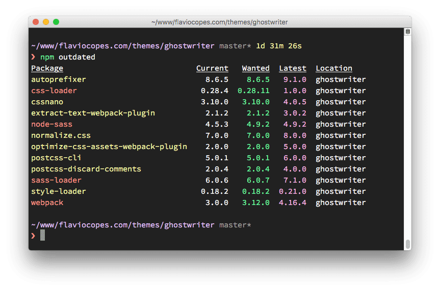

21. Обновление зависимостей
При установке пакета с помощью npm install <package-name\>, в папку node_modules загружается последняя доступная версия пакета, запись о пакете добавляется в package.json и package-lock.json, находящиеся в текущей директории.
npm также устанавливает последние доступные версии зависимостей пакета.
Допустим, вы установили cowsay.
При выполнении npm install cowsay запись о пакете была добавлена в package.json:
{
"dependencies": {
"cowsay": "^1.3.1"
}
}
А вот что было записано в package-lock.json (мы удалили некоторые вложенные зависимости для ясности):
{
"requires": true,
"lockfileVersion": 1,
"dependencies": {
"cowsay": {
"version": "1.3.1",
"resolved": "https://registry.npmjs.org/cowsay/-/cowsay-1.3.1.tgz",
"integrity": "sha512-3PVFe6FePVtPj1HTeLin9v8WyLl+VmM1l1H/5P+BTTDkMAjufp+0F9eLjzRnOHzVAYeIYFF5po5NjRrgefnRMQ==",
"requires": {
"get-stdin": "^5.0.1",
"optimist": "~0.6.1",
"string-width": "~2.1.1",
"strip-eof": "^1.0.0"
}
}
}
}
Оба файла говорят нам, что мы установили cowsay версии 1.3.1, правило обновления (^1.3.1) гласит, что нам подойдут патчевые и минорные релизы: 1.3.2, 1.4.0 и т.д.
Если появится новая минорная или патчевая версия, мы выполним npm update, и установленная версия обновится, в package-lock.json появится запись о новой версии.
package.json не изменится.
Для того, чтобы увидеть новые релизы пакетов, необходимо выполнить npm outdated.
Вот список новых релизов пакетов из одного репозитория, который какое-то время не обновлялся:

Некоторые из релизов являются мажорными. Запуск npm update не обновит такие пакеты. Мажорные релизы никогда не обновляются таким способом, поскольку они включают в себя несовместимые изменения, а npm заботится о работоспособности вашего приложения.
Для обновления мажорных версий всех пакетов, установите пакет npm-check-updates глобально: npm i npm-check-updates -g и запустите его: ncu -u.
Это обновит все правила обновлений пакетов, указанные в разделах dependencies и devDependencies файла package.json так, что npm сможет обновить их до новых мажорных версий.
После этого выполняем обновление: npm update.